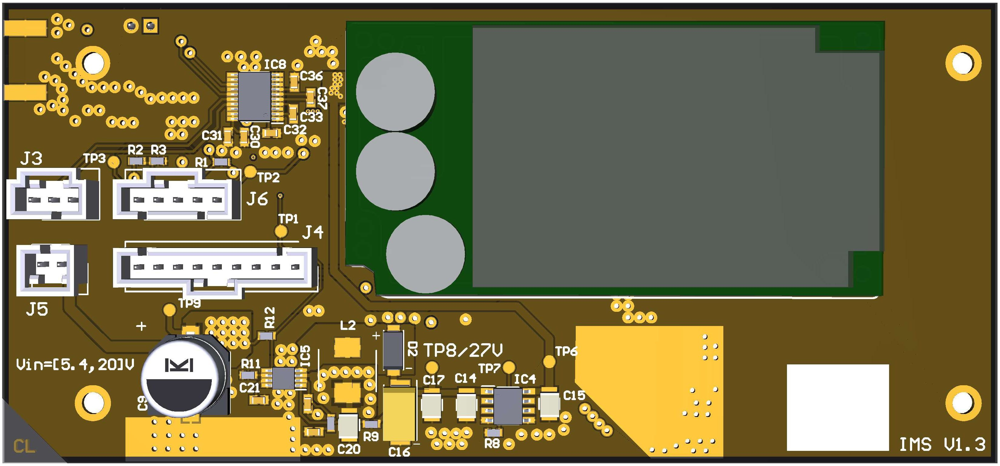
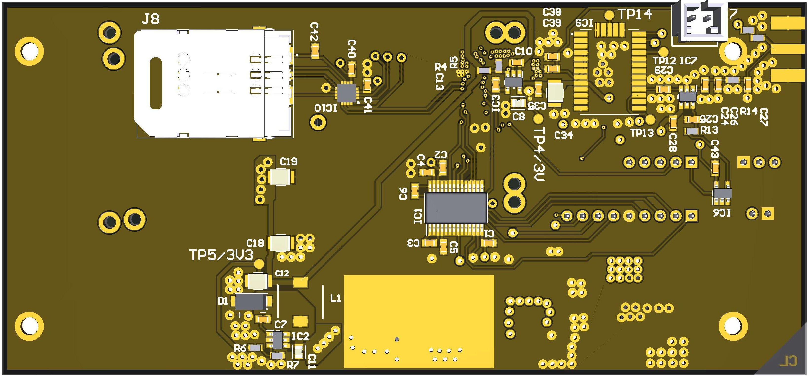

Open ocean buoy communications module
Iridium Modem SIO
A satellite modem with integrated GNSS for reliable data and position uplink on offshore ocean buoys
Developed at the Scripps Institution of Oceanography (SIO)
01
Overview
Satellite modem with integrated GPS module. Communication over RS-232 interface.
Optimized for open ocean buoy data uplink.
02
Board Render

Iridium_Modem_3D_Render.jpg
Open Render →

Iridium_Modem_3D_Render.jpg
Open Render →
03
Schematic
Scroll to view full schematic ↓
Loading schematic…
Iridium_Modem_Schematic.pdf
Open Schematic →
Feature notes
Power stage
Add notes on the power supply and regulation circuitry here.
GPS front end
Add notes on the GPS module integration here.
RS-232 interface
Add notes on the serial interface and level shifting here.
04
Fabrication Drawing
Loading fabrication drawing…
Iridium_Modem_SIO_Fabrication_Drawing.pdf
Open Fabrication Drawing →
Feature notes
Board outline
Add notes on overall dimensions and mounting here.
Enclosure fit
Add notes on clearance and enclosure compatibility here.
05